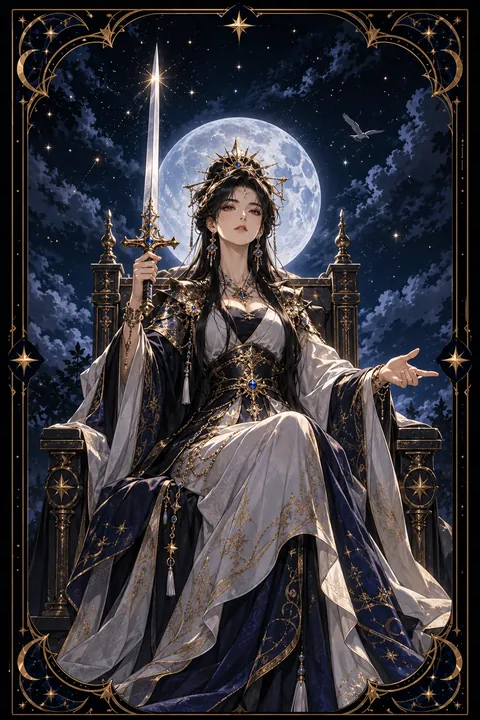

검 여왕 카드 — 냉철한 판단과 분명한 경계
검 여왕 카드 한눈에 보기
검 여왕 카드 상징 읽기

동네보살의 카드 그림은 전통 라이더–웨이트 덱의 뜻을 새 그림으로 옮긴 것입니다. 아래 상징 설명은 전통 덱의 그림을 기준으로 합니다.
검 여왕은 구름 위 높은 옥좌에 자리 잡고 앉아 곧게 선 검을 오른손에 쥐고 있습니다. 똑바로 선 검은 치우치지 않는 판단과 진실을 향한 태도를 상징합니다. 여왕의 옆얼굴은 차분하고 단호하여 감정에 흔들리지 않는 성숙함을 보여 줍니다.
여왕은 왼손을 앞으로 내밀고 있습니다. 차갑게 밀어내는 몸짓이 아니라 솔직하게 다가오는 사람을 맞이하겠다는 열린 태도로 해석합니다. 냉철함과 공정함이 함께 있다는 뜻입니다.
높은 하늘을 나는 한 마리 새는 넓은 시야와 홀로 설 수 있는 독립성을 나타냅니다. 옥좌와 왕관에 새겨진 나비는 변화와 영혼의 성장을 뜻하고 발아래 펼쳐진 구름은 생각의 영역을 상징합니다. 많은 경험을 겪으며 얻은 지혜로 사물을 있는 그대로 보는 인물입니다. 옥좌 아래쪽에 보이는 날개 달린 아이 얼굴은 순수한 마음을 잃지 않은 지혜를 나타냅니다.
검 여왕 카드 정방향 뜻
정방향 검 여왕은 감정에 휩쓸리지 않고 상황을 있는 그대로 바라보는 시기를 뜻합니다. 복잡한 문제 속에서도 핵심을 빠르게 짚어 내고 사실과 추측을 명확히 구분할 수 있습니다. 필요한 말을 돌려 말하지 않고 분명하게 전하는 힘도 강해집니다.
이 카드는 건강한 경계를 세우라는 메시지를 담고 있습니다. 부당한 요구나 불편한 관계에는 정중하지만 단호하게 선을 그어도 괜찮습니다. 스스로 기준을 세우고 지킬 때 주변의 신뢰도 함께 높아집니다.
검 여왕의 지혜는 종종 지난 경험과 아픔에서 나옵니다. 과거의 상처를 원망으로만 남기지 않고 판단의 밑거름으로 삼는다면 누구보다 믿음직한 조언자가 될 수 있습니다. 다만 분명함이 지나쳐 차갑게 보이지 않도록 따뜻한 말 한마디를 곁들이는 여유도 가져 보세요.
검 여왕 카드 역방향 뜻
역방향 검 여왕은 명료한 판단력이 날카로운 말이나 차가운 태도로 변한 모습입니다. 옳은 말이라도 상대를 몰아세우는 방식으로 전하면 관계에 금이 갈 수 있습니다. 비판이 지나쳐 주변 사람들이 점점 거리를 두는 상황이 생기기도 합니다.
지난 상처가 아직 풀리지 않아 마음을 닫고 누구도 들이지 않으려는 상태를 뜻하기도 합니다. 태연한 표정 뒤 내면에서는 외로움과 서운함이 판단을 흐리고 있을 수 있습니다. 반대로 주변의 말에 쉽게 흔들려 자신의 기준을 잃어버리는 경우도 있습니다.
지금은 말의 온도를 조절하고 마음속 서운함을 인정하는 것이 필요합니다. 비난 대신 원하는 것을 차분히 전하는 연습을 해 보세요. 닫힌 마음에 작은 틈만 내어도 관계가 다시 숨을 쉬기 시작합니다.
연애에서 검 여왕 카드
솔로라면 조건이나 분위기에 휩쓸리지 않고 사람을 차분하게 가려보는 시기입니다. 바라는 연애의 모습이 분명해져 맞지 않는 인연은 일찍 정리하게 됩니다. 당당하고 솔직한 태도가 오히려 매력으로 비쳐 성숙한 상대의 관심을 끌 수 있습니다.
짝이 있는 경우라면 서로의 경계를 존중하는 성숙한 관계를 만들어 갈 때입니다. 불편했던 점이나 바라는 점을 감정적으로 쏟아내기보다 차분하고 분명하게 이야기하면 대화가 한층 깊어집니다. 다만 상대의 말을 논리로만 따지고 잘잘못을 가리려 하면 마음이 멀어질 수 있습니다. 판단보다 공감이 먼저 필요한 순간도 있다는 점을 기억하세요. 이별의 상처가 남아 있다면 충분히 인정하고 정리하는 시간이 새로운 관계를 위한 준비가 됩니다.
재회·속마음 질문에서 검 여왕 카드
재회 질문에서 검 여왕은 감정보다 이성으로 관계를 바라보는 상태를 뜻합니다. 상대가 이미 마음을 정리하고 냉정하게 거리를 두고 있을 수도 있고 당신 스스로 다시 만나는 것이 옳은지 따져 보는 중일 수도 있습니다. 재회를 원한다면 감정에 호소하기보다 헤어진 이유와 달라진 점을 솔직하고 차분하게 전하는 편이 설득력이 있습니다. 상대의 결정이 분명하다면 그 뜻을 존중하는 것도 자신을 지키는 선택입니다. 대화가 이어진다면 누가 옳았는지 가리기보다 앞으로 어떤 관계를 원하는지 분명히 이야기하는 것이 좋습니다. 감정을 숨기지 말되 흥분하지 않는 태도가 상대의 마음을 움직입니다.
일·금전에서 검 여왕 카드
일과 직장에서는 분석력과 판단력이 빛나는 시기입니다. 복잡한 문제를 정리하거나 공정한 평가가 필요한 자리에서 신뢰를 얻을 수 있습니다. 부당한 업무 요청에는 근거를 들어 정중하게 의견을 밝히세요. 보고서나 문서 작업처럼 정확성이 필요한 일에서 특히 실력이 드러납니다.
살림살이 면에서는 감정적인 소비를 줄이고 씀씀이를 차갑게 따져 보기에 알맞은 때입니다. 필요한 것과 원하는 것을 구분해 예산을 세워 보세요. 돈이 오가는 약속은 말보다 문서로 남겨 두는 편이 안전합니다. 가까운 사이일수록 경계를 분명히 하는 것이 관계를 지키는 길입니다. 거절할 일은 이유를 짧고 분명하게 밝히면 관계가 오히려 깔끔해집니다.
검 여왕 카드는 예일까 아니오일까
상황을 객관적으로 보고 분명하게 판단할 수 있는 카드여서 사실에 근거한 질문에는 예라는 답을 줍니다. 카드가 뒤집혀 나왔다면 감정이나 편견이 판단을 흐리고 있어 한 번 더 확인이 필요합니다.
자주 묻는 질문
검 여왕 카드 역방향은 나쁜 뜻인가요?
역방향 검 여왕은 명료한 판단력이 날카로운 말이나 차가운 태도로 변한 모습입니다. 옳은 말이라도 상대를 몰아세우는 방식으로 전하면 관계에 금이 갈 수 있습니다. 비판이 지나쳐 주변 사람들이 점점 거리를 두는 상황이 생기기도 합니다.
검 여왕 카드가 연애 질문에 나오면요?
솔로라면 조건이나 분위기에 휩쓸리지 않고 사람을 차분하게 가려보는 시기입니다. 바라는 연애의 모습이 분명해져 맞지 않는 인연은 일찍 정리하게 됩니다. 당당하고 솔직한 태도가 오히려 매력으로 비쳐 성숙한 상대의 관심을 끌 수 있습니다.
타로 카드는 어떻게 뽑나요?
타로 카드 페이지에서 78장을 섞으면 그중 22장이 펼쳐집니다. 마음이 가는 세 장을 고르면 과거·현재·미래 자리에 놓이고, 한 장씩 뒤집어 자리와 방향에 맞는 풀이를 읽습니다. 정방향과 역방향은 섞는 순간 정해집니다.